Edible Wild Berries of Goa
This is an attempt to document some of the wild berries and shrubs found in the plateau regions of Goa and western ghats. I've listed their common names in Konkani and Marathi. Once commonly available and known to locals, these plants are now fast disappearing due to urbanization and hill cutting.
Wild Karvand (Carissa Spinarum)
Konkani: Kanna (काण्णां ) | Marathi: Karvand (करवंद) | Scientific Name: Carissa Spinarum
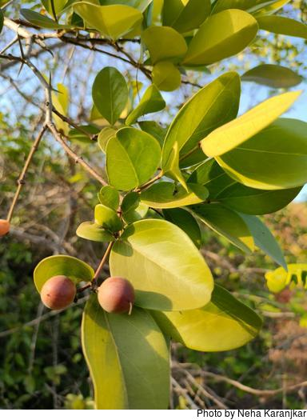 Raw fruit and plant | 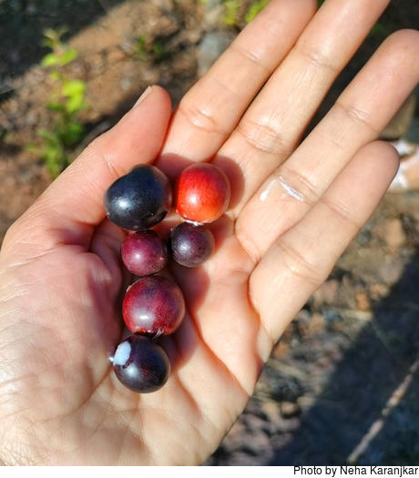 Ripe fruit | 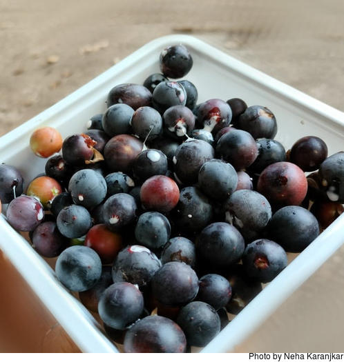 Ripe fruit | 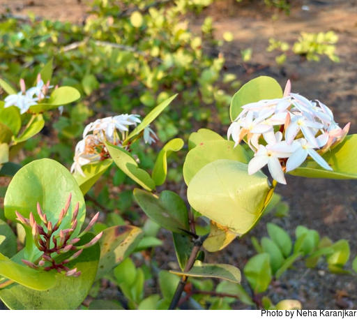 Flowers |
Karvand (Carissa Carandas)
Konkani: Kanna (काण्णां ) | Marathi: Karvand (करवंद) | Scientific Name: Carissa Carandas
(The 3 images below are sourced from Wikimedia commons.)
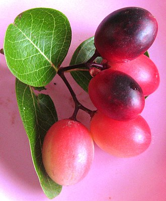 | 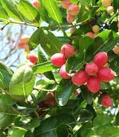 | 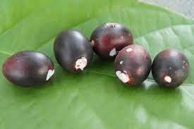 |
Chunna (Ziziphus Rugosa)
Konkani: Zunna / Chunna (चुन्नां) | Marathi: Toran (तोरण) | Scientific Name: Ziziphus Rugosa
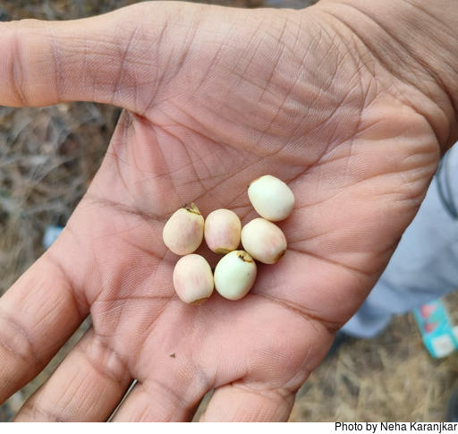 Ripe berries | 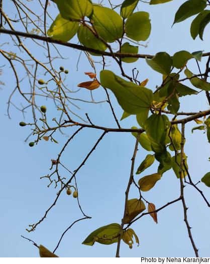 Plant | 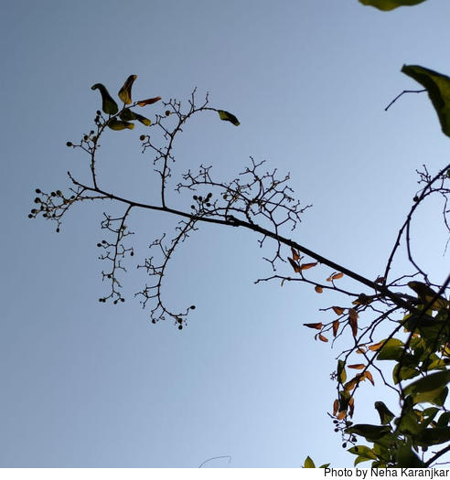 Fruiting branch with its characteristic shape |
Anjan / Ironwood Tree (Memecylon Umbellatum)
Konkani: Kallyo Ankryo ( काळ्यो आंक्र्यो ) | Marathi: Anjani (अंजनी) | Scientific Name: Memecylon Umbellatum
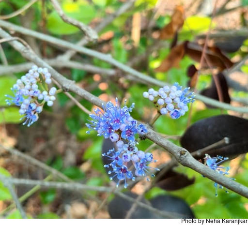 Flowers | 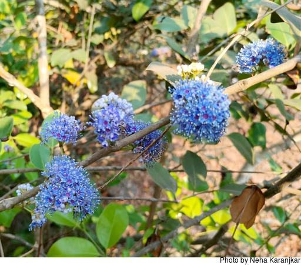 Flowers | 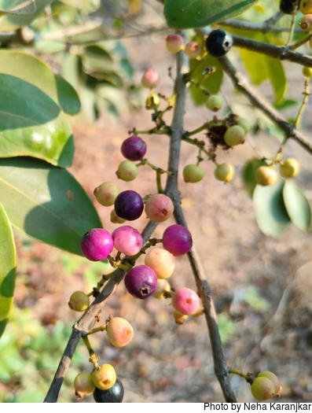 Ripe berries |
Jungle Geranium (Ixora coccinea)
Konkani: Patkali (पटकळी) / Pitkuli (पिटकुळी) | Marathi: Pendgul (पेंडगूळ) | Scientific Name: Ixora coccinea
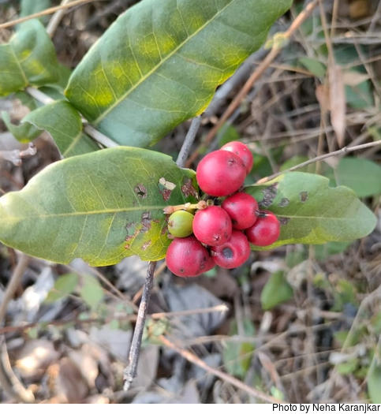 Ripe berries | 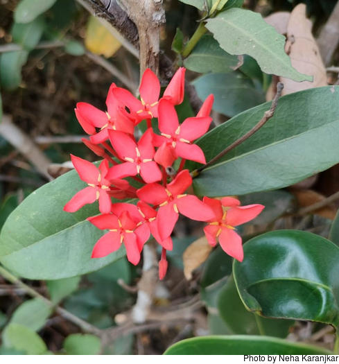 Plant |
Bhedsa (Syzygium caryophyllatum)
Konkani: Bhedsa (भेडसां) | Marathi: Bhedshi (भेडशी) , Ran Lavang (रान लवंग) | Scientific Name: Syzygium caryophyllatum
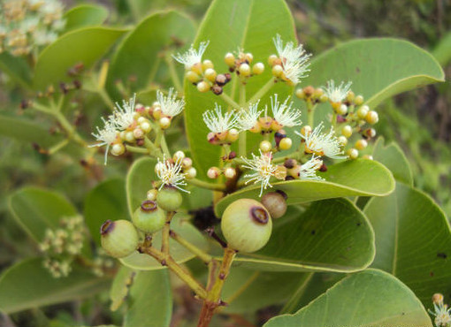 Image source: Wikimedia commons (Link) | 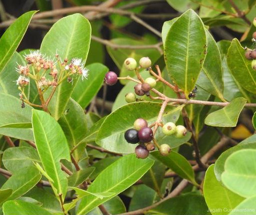 Image source: www.floraofsrilanka.com (Link) |
|

{kind=link}
Yet To Be Added (Waiting for Photos):
Assade
Chirput